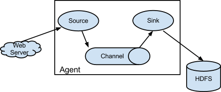
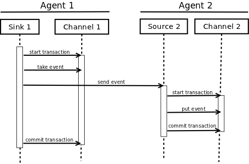

Flume 1.11.0 Developer Guide
Overview
Apache Flume is a distributed, reliable, and available system for efficiently collecting, aggregating and moving large amounts of log data from many different sources to a centralized data store.
Apache Flume is a top-level project at the Apache Software Foundation. There are currently two release code lines available, versions 0.9.x and 1.x. This documentation applies to the 1.x codeline. For the 0.9.x codeline, please see the Flume 0.9.x Developer Guide.
Architecture
Data flow model
An Event is a unit of data that flows through a Flume agent. The Event
flows from Source to Channel to Sink, and is represented by an
implementation of the Event interface. An Event carries a payload (byte
array) that is accompanied by an optional set of headers (string attributes).
A Flume agent is a process (JVM) that hosts the components that allow
`Event`s to flow from an external source to a external destination.

A Source consumes Event`s having a specific format, and those
`Event`s are delivered to the `Source by an external source like a web
server. For example, an AvroSource can be used to receive Avro Event`s
from clients or from other Flume agents in the flow. When a `Source receives
an Event, it stores it into one or more Channel`s. The `Channel is
a passive store that holds the Event until that Event is consumed by a
Sink. One type of Channel available in Flume is the FileChannel
which uses the local filesystem as its backing store. A Sink is responsible
for removing an Event from the Channel and putting it into an external
repository like HDFS (in the case of an HDFSEventSink) or forwarding it to
the Source at the next hop of the flow. The Source and Sink within
the given agent run asynchronously with the Event`s staged in the
`Channel.
Reliability
An Event is staged in a Flume agent’s Channel. Then it’s the
Sink’s responsibility to deliver the `Event to the next agent or
terminal repository (like HDFS) in the flow. The Sink removes an Event
from the Channel only after the Event is stored into the Channel of
the next agent or stored in the terminal repository. This is how the single-hop
message delivery semantics in Flume provide end-to-end reliability of the flow.
Flume uses a transactional approach to guarantee the reliable delivery of the
Event`s. The `Source`s and `Sink`s encapsulate the
storage/retrieval of the `Event`s in a `Transaction provided by the
Channel. This ensures that the set of Event`s are reliably passed from
point to point in the flow. In the case of a multi-hop flow, the `Sink from
the previous hop and the Source of the next hop both have their
Transaction`s open to ensure that the `Event data is safely stored in
the Channel of the next hop.
Building Flume
Getting the source
Check-out the code using Git. Click here for the git repository root or at GitHub.
The Flume 1.x development happens under the branch "trunk" so this command line can be used:
or
git clone https://github.com/apache/flume.git
Compile/test Flume
The Flume build is mavenized. You can compile Flume using the standard Maven commands:
-
Compile only:
mvn clean compile -
Compile and run unit tests:
mvn clean test -
Run individual test(s):
mvn clean test -Dtest=<Test1>,<Test2>,… -DfailIfNoTests=false -
Create tarball package:
mvn clean install -
Create tarball package (skip unit tests):
mvn clean install -DskipTests
Updating Protocol Buffer Version
File channel has a dependency on Protocol Buffer. When updating the version of Protocol Buffer used by Flume, it is necessary to regenerate the data access classes using the protoc compiler that is part of Protocol Buffer as follows.
-
Update version of Protocol Buffer in pom.xml
-
Add Apache license header to any of the generated files that are missing it
-
Rebuild and test Flume:
cd ../..; mvn clean install
Developing custom components
Client
The client operates at the point of origin of events and delivers them to a
Flume agent. Clients typically operate in the process space of the application
they are consuming data from. Flume currently supports Avro, log4j, syslog,
and Http POST (with a JSON body) as ways to transfer data from a external
source. Additionally, there’s an ExecSource that can consume the output of a
local process as input to Flume.
It’s quite possible to have a use case where these existing options are not
sufficient. In this case you can build a custom mechanism to send data to
Flume. There are two ways of achieving this. The first option is to create a
custom client that communicates with one of Flume’s existing Source`s like
`AvroSource or SyslogTcpSource. Here the client should convert its data
into messages understood by these Flume Source`s. The other option is to
write a custom Flume `Source that directly talks with your existing client
application using some IPC or RPC protocol, and then converts the client data
into Flume Event`s to be sent downstream. Note that all events stored
within the `Channel of a Flume agent must exist as Flume `Event`s.
Client SDK
Though Flume contains a number of built-in mechanisms (i.e. `Source`s) to ingest data, often one wants the ability to communicate with Flume directly from a custom application. The Flume Client SDK is a library that enables applications to connect to Flume and send data into Flume’s data flow over RPC.
RPC client interface
An implementation of Flume’s RpcClient interface encapsulates the RPC mechanism
supported by Flume. The user’s application can simply call the Flume Client
SDK’s append(Event) or appendBatch(List<Event>) to send data and not
worry about the underlying message exchange details. The user can provide the
required Event arg by either directly implementing the Event interface,
by using a convenience implementation such as the SimpleEvent class, or by using
EventBuilder’s overloaded `withBody() static helper methods.
RPC clients - Avro and Thrift
As of Flume 1.4.0, Avro is the default RPC protocol. The
NettyAvroRpcClient and ThriftRpcClient implement the RpcClient
interface. The client needs to create this object with the host and port of
the target Flume agent, and can then use the RpcClient to send data into
the agent. The following example shows how to use the Flume Client SDK API
within a user’s data-generating application:
import org.apache.flume.Event;
import org.apache.flume.EventDeliveryException;
import org.apache.flume.api.RpcClient;
import org.apache.flume.api.RpcClientFactory;
import org.apache.flume.event.EventBuilder;
import java.nio.charset.Charset;
public class MyApp {
public static void main(String[] args) {
MyRpcClientFacade client = new MyRpcClientFacade();
// Initialize client with the remote Flume agent's host and port
client.init("host.example.org", 41414);
// Send 10 events to the remote Flume agent. That agent should be
// configured to listen with an AvroSource.
String sampleData = "Hello Flume!";
for (int i = 0; i < 10; i++) {
client.sendDataToFlume(sampleData);
}
client.cleanUp();
}
}
class MyRpcClientFacade {
private RpcClient client;
private String hostname;
private int port;
public void init(String hostname, int port) {
// Setup the RPC connection
this.hostname = hostname;
this.port = port;
this.client = RpcClientFactory.getDefaultInstance(hostname, port);
// Use the following method to create a thrift client (instead of the above line):
// this.client = RpcClientFactory.getThriftInstance(hostname, port);
}
public void sendDataToFlume(String data) {
// Create a Flume Event object that encapsulates the sample data
Event event = EventBuilder.withBody(data, Charset.forName("UTF-8"));
// Send the event
try {
client.append(event);
} catch (EventDeliveryException e) {
// clean up and recreate the client
client.close();
client = null;
client = RpcClientFactory.getDefaultInstance(hostname, port);
// Use the following method to create a thrift client (instead of the above line):
// this.client = RpcClientFactory.getThriftInstance(hostname, port);
}
}
public void cleanUp() {
// Close the RPC connection
client.close();
}
}The remote Flume agent needs to have an AvroSource (or a
ThriftSource if you are using a Thrift client) listening on some port.
Below is an example Flume agent configuration that’s waiting for a connection
from MyApp:
a1.channels = c1
a1.sources = r1
a1.sinks = k1
a1.channels.c1.type = memory
a1.sources.r1.channels = c1
a1.sources.r1.type = avro
# For using a thrift source set the following instead of the above line.
# a1.source.r1.type = thrift
a1.sources.r1.bind = 0.0.0.0
a1.sources.r1.port = 41414
a1.sinks.k1.channel = c1
a1.sinks.k1.type = loggerFor more flexibility, the default Flume client implementations
(NettyAvroRpcClient and ThriftRpcClient) can be configured with these
properties:
client.type = default (for avro) or thrift (for thrift)
hosts = h1 # default client accepts only 1 host
# (additional hosts will be ignored)
hosts.h1 = host1.example.org:41414 # host and port must both be specified
# (neither has a default)
batch-size = 100 # Must be >=1 (default: 100)
connect-timeout = 20000 # Must be >=1000 (default: 20000)
request-timeout = 20000 # Must be >=1000 (default: 20000)Secure RPC client - Thrift
As of Flume 1.6.0, Thrift source and sink supports kerberos based authentication.
The client needs to use the getThriftInstance method of SecureRpcClientFactory
to get hold of a SecureThriftRpcClient. SecureThriftRpcClient extends
ThriftRpcClient which implements the RpcClient interface. The kerberos
authentication module resides in flume-ng-auth module which is
required in classpath, when using the SecureRpcClientFactory. Both the client
principal and the client keytab should be passed in as parameters through the
properties and they reflect the credentials of the client to authenticate
against the kerberos KDC. In addition, the server principal of the destination
Thrift source to which this client is connecting to, should also be provided.
The following example shows how to use the SecureRpcClientFactory
within a user’s data-generating application:
import org.apache.flume.Event;
import org.apache.flume.EventDeliveryException;
import org.apache.flume.event.EventBuilder;
import org.apache.flume.api.SecureRpcClientFactory;
import org.apache.flume.api.RpcClientConfigurationConstants;
import org.apache.flume.api.RpcClient;
import java.nio.charset.Charset;
import java.util.Properties;
public class MyApp {
public static void main(String[] args) {
MySecureRpcClientFacade client = new MySecureRpcClientFacade();
// Initialize client with the remote Flume agent's host, port
Properties props = new Properties();
props.setProperty(RpcClientConfigurationConstants.CONFIG_CLIENT_TYPE, "thrift");
props.setProperty("hosts", "h1");
props.setProperty("hosts.h1", "client.example.org"+":"+ String.valueOf(41414));
// Initialize client with the kerberos authentication related properties
props.setProperty("kerberos", "true");
props.setProperty("client-principal", "flumeclient/client.example.org@EXAMPLE.ORG");
props.setProperty("client-keytab", "/tmp/flumeclient.keytab");
props.setProperty("server-principal", "flume/server.example.org@EXAMPLE.ORG");
client.init(props);
// Send 10 events to the remote Flume agent. That agent should be
// configured to listen with an AvroSource.
String sampleData = "Hello Flume!";
for (int i = 0; i < 10; i++) {
client.sendDataToFlume(sampleData);
}
client.cleanUp();
}
}
class MySecureRpcClientFacade {
private RpcClient client;
private Properties properties;
public void init(Properties properties) {
// Setup the RPC connection
this.properties = properties;
// Create the ThriftSecureRpcClient instance by using SecureRpcClientFactory
this.client = SecureRpcClientFactory.getThriftInstance(properties);
}
public void sendDataToFlume(String data) {
// Create a Flume Event object that encapsulates the sample data
Event event = EventBuilder.withBody(data, Charset.forName("UTF-8"));
// Send the event
try {
client.append(event);
} catch (EventDeliveryException e) {
// clean up and recreate the client
client.close();
client = null;
client = SecureRpcClientFactory.getThriftInstance(properties);
}
}
public void cleanUp() {
// Close the RPC connection
client.close();
}
}The remote ThriftSource should be started in kerberos mode.
Below is an example Flume agent configuration that’s waiting for a connection
from MyApp:
a1.channels = c1
a1.sources = r1
a1.sinks = k1
a1.channels.c1.type = memory
a1.sources.r1.channels = c1
a1.sources.r1.type = thrift
a1.sources.r1.bind = 0.0.0.0
a1.sources.r1.port = 41414
a1.sources.r1.kerberos = true
a1.sources.r1.agent-principal = flume/server.example.org@EXAMPLE.ORG
a1.sources.r1.agent-keytab = /tmp/flume.keytab
a1.sinks.k1.channel = c1
a1.sinks.k1.type = loggerFailover Client
This class wraps the default Avro RPC client to provide failover handling capability to clients. This takes a whitespace-separated list of <host>:<port> representing the Flume agents that make-up a failover group. The Failover RPC Client currently does not support thrift. If there’s a communication error with the currently selected host (i.e. agent) agent, then the failover client automatically fails-over to the next host in the list. For example:
// Setup properties for the failover
Properties props = new Properties();
props.put("client.type", "default_failover");
// List of hosts (space-separated list of user-chosen host aliases)
props.put("hosts", "h1 h2 h3");
// host/port pair for each host alias
String host1 = "host1.example.org:41414";
String host2 = "host2.example.org:41414";
String host3 = "host3.example.org:41414";
props.put("hosts.h1", host1);
props.put("hosts.h2", host2);
props.put("hosts.h3", host3);
// create the client with failover properties
RpcClient client = RpcClientFactory.getInstance(props);For more flexibility, the failover Flume client implementation
(FailoverRpcClient) can be configured with these properties:
client.type = default_failover
hosts = h1 h2 h3 # at least one is required, but 2 or
# more makes better sense
hosts.h1 = host1.example.org:41414
hosts.h2 = host2.example.org:41414
hosts.h3 = host3.example.org:41414
max-attempts = 3 # Must be >=0 (default: number of hosts
# specified, 3 in this case). A '0'
# value doesn't make much sense because
# it will just cause an append call to
# immmediately fail. A '1' value means
# that the failover client will try only
# once to send the Event, and if it
# fails then there will be no failover
# to a second client, so this value
# causes the failover client to
# degenerate into just a default client.
# It makes sense to set this value to at
# least the number of hosts that you
# specified.
batch-size = 100 # Must be >=1 (default: 100)
connect-timeout = 20000 # Must be >=1000 (default: 20000)
request-timeout = 20000 # Must be >=1000 (default: 20000)LoadBalancing RPC client
The Flume Client SDK also supports an RpcClient which load-balances among
multiple hosts. This type of client takes a whitespace-separated list of
<host>:<port> representing the Flume agents that make-up a load-balancing group.
This client can be configured with a load balancing strategy that either
randomly selects one of the configured hosts, or selects a host in a round-robin
fashion. You can also specify your own custom class that implements the
LoadBalancingRpcClient$HostSelector interface so that a custom selection
order is used. In that case, the FQCN of the custom class needs to be specified
as the value of the host-selector property. The LoadBalancing RPC Client
currently does not support thrift.
If backoff is enabled then the client will temporarily blacklist
hosts that fail, causing them to be excluded from being selected as a failover
host until a given timeout. When the timeout elapses, if the host is still
unresponsive then this is considered a sequential failure, and the timeout is
increased exponentially to avoid potentially getting stuck in long waits on
unresponsive hosts.
The maximum backoff time can be configured by setting maxBackoff (in
milliseconds). The maxBackoff default is 30 seconds (specified in the
OrderSelector class that’s the superclass of both load balancing
strategies). The backoff timeout will increase exponentially with each
sequential failure up to the maximum possible backoff timeout.
The maximum possible backoff is limited to 65536 seconds (about 18.2 hours).
For example:
// Setup properties for the load balancing
Properties props = new Properties();
props.put("client.type", "default_loadbalance");
// List of hosts (space-separated list of user-chosen host aliases)
props.put("hosts", "h1 h2 h3");
// host/port pair for each host alias
String host1 = "host1.example.org:41414";
String host2 = "host2.example.org:41414";
String host3 = "host3.example.org:41414";
props.put("hosts.h1", host1);
props.put("hosts.h2", host2);
props.put("hosts.h3", host3);
props.put("host-selector", "random"); // For random host selection
// props.put("host-selector", "round_robin"); // For round-robin host
// // selection
props.put("backoff", "true"); // Disabled by default.
props.put("maxBackoff", "10000"); // Defaults 0, which effectively
// becomes 30000 ms
// Create the client with load balancing properties
RpcClient client = RpcClientFactory.getInstance(props);For more flexibility, the load-balancing Flume client implementation
(LoadBalancingRpcClient) can be configured with these properties:
client.type = default_loadbalance
hosts = h1 h2 h3 # At least 2 hosts are required
hosts.h1 = host1.example.org:41414
hosts.h2 = host2.example.org:41414
hosts.h3 = host3.example.org:41414
backoff = false # Specifies whether the client should
# back-off from (i.e. temporarily
# blacklist) a failed host
# (default: false).
maxBackoff = 0 # Max timeout in millis that a will
# remain inactive due to a previous
# failure with that host (default: 0,
# which effectively becomes 30000)
host-selector = round_robin # The host selection strategy used
# when load-balancing among hosts
# (default: round_robin).
# Other values are include "random"
# or the FQCN of a custom class
# that implements
# LoadBalancingRpcClient$HostSelector
batch-size = 100 # Must be >=1 (default: 100)
connect-timeout = 20000 # Must be >=1000 (default: 20000)
request-timeout = 20000 # Must be >=1000 (default: 20000)Embedded agent
Flume has an embedded agent api which allows users to embed an agent in their application. This agent is meant to be lightweight and as such not all sources, sinks, and channels are allowed. Specifically the source used is a special embedded source and events should be send to the source via the put, putAll methods on the EmbeddedAgent object. Only File Channel and Memory Channel are allowed as channels while Avro Sink is the only supported sink. Interceptors are also supported by the embedded agent.
Note: The embedded agent has a dependency on hadoop-core.jar.
Configuration of an Embedded Agent is similar to configuration of a full Agent. The following is an exhaustive list of configration options:
Required properties are in bold.
| Property Name | Default | Description |
|---|---|---|
source.type |
embedded |
The only available source is the embedded source. |
channel.type |
|
|
channel.* |
— |
Configuration options for the channel type requested, |
se |
e MemoryChannel or |
FileChannel user guide for an exhaustive list. |
sinks |
— |
List of sink names |
sink.type |
— |
Property name must match a name in the list of sinks. |
Va |
lue must be ``avro |
`` |
sink.* |
— |
Configuration options for the sink. |
Se |
e AvroSink user gu |
ide for an exhaustive list, |
ho |
wever note AvroSin |
k requires at least hostname and port. |
processor.type |
|
Either |
processor.* |
— |
Configuration options for the sink processor selected. |
Se |
e FailoverSinksPro |
cessor and LoadBalancingSinkProcessor |
us |
er guide for an ex |
haustive list. |
source.interceptors |
— |
Space-separated list of interceptors |
source.interceptors.* |
— |
Configuration options for individual interceptors |
sp |
ecified in the sou |
rce.interceptors property |
Below is an example of how to use the agent:
Map<String, String> properties = new HashMap<String, String>();
properties.put("channel.type", "memory");
properties.put("channel.capacity", "200");
properties.put("sinks", "sink1 sink2");
properties.put("sink1.type", "avro");
properties.put("sink2.type", "avro");
properties.put("sink1.hostname", "collector1.apache.org");
properties.put("sink1.port", "5564");
properties.put("sink2.hostname", "collector2.apache.org");
properties.put("sink2.port", "5565");
properties.put("processor.type", "load_balance");
properties.put("source.interceptors", "i1");
properties.put("source.interceptors.i1.type", "static");
properties.put("source.interceptors.i1.key", "key1");
properties.put("source.interceptors.i1.value", "value1");
EmbeddedAgent agent = new EmbeddedAgent("myagent");
agent.configure(properties);
agent.start();
List<Event> events = Lists.newArrayList();
events.add(event);
events.add(event);
events.add(event);
events.add(event);
agent.putAll(events);
...
agent.stop();Transaction interface
The Transaction interface is the basis of reliability for Flume. All the
major components (ie. Source`s, `Sink`s and `Channel`s) must use a
Flume `Transaction.

A Transaction is implemented within a Channel implementation. Each
Source and Sink that is connected to a Channel must obtain a
Transaction object. The Source`s use a `ChannelProcessor
to manage the Transaction`s, the `Sink`s manage them explicitly via
their configured `Channel. The operation to stage an
Event (put it into a Channel) or extract an Event (take it out of a
Channel) is done inside an active Transaction. For example:
Channel ch = new MemoryChannel();
Transaction txn = ch.getTransaction();
txn.begin();
try {
// This try clause includes whatever Channel operations you want to do
Event eventToStage = EventBuilder.withBody("Hello Flume!",
Charset.forName("UTF-8"));
ch.put(eventToStage);
// Event takenEvent = ch.take();
// ...
txn.commit();
} catch (Throwable t) {
txn.rollback();
// Log exception, handle individual exceptions as needed
// re-throw all Errors
if (t instanceof Error) {
throw (Error)t;
}
} finally {
txn.close();
}Here we get hold of a Transaction from a Channel. After begin()
returns, the Transaction is now active/open and the Event is then put
into the Channel. If the put is successful, then the Transaction is
committed and closed.
Sink
The purpose of a Sink to extract Event`s from the `Channel and
forward them to the next Flume Agent in the flow or store them in an external
repository. A Sink is associated with exactly one Channel`s, as
configured in the Flume properties file. There’s one `SinkRunner instance
associated with every configured Sink, and when the Flume framework calls
SinkRunner.start(), a new thread is created to drive the Sink (using
SinkRunner.PollingRunner as the thread’s Runnable). This thread manages
the Sink’s lifecycle. The Sink needs to implement the start() and
stop() methods that are part of the LifecycleAware interface. The
Sink.start() method should initialize the Sink and bring it to a state
where it can forward the Event`s to its next destination. The
`Sink.process() method should do the core processing of extracting the
Event from the Channel and forwarding it. The Sink.stop() method
should do the necessary cleanup (e.g. releasing resources). The Sink
implementation also needs to implement the Configurable interface for
processing its own configuration settings. For example:
public class MySink extends AbstractSink implements Configurable {
private String myProp;
@Override
public void configure(Context context) {
String myProp = context.getString("myProp", "defaultValue");
// Process the myProp value (e.g. validation)
// Store myProp for later retrieval by process() method
this.myProp = myProp;
}
@Override
public void start() {
// Initialize the connection to the external repository (e.g. HDFS) that
// this Sink will forward Events to ..
}
@Override
public void stop () {
// Disconnect from the external respository and do any
// additional cleanup (e.g. releasing resources or nulling-out
// field values) ..
}
@Override
public Status process() throws EventDeliveryException {
Status status = null;
// Start transaction
Channel ch = getChannel();
Transaction txn = ch.getTransaction();
txn.begin();
try {
// This try clause includes whatever Channel operations you want to do
Event event = ch.take();
// Send the Event to the external repository.
// storeSomeData(e);
txn.commit();
status = Status.READY;
} catch (Throwable t) {
txn.rollback();
// Log exception, handle individual exceptions as needed
status = Status.BACKOFF;
// re-throw all Errors
if (t instanceof Error) {
throw (Error)t;
}
}
return status;
}
}Source
The purpose of a Source is to receive data from an external client and store
it into the configured Channel`s. A `Source can get an instance of its own
ChannelProcessor to process an Event, commited within a Channel
local transaction, in serial. In the case of an exception, required
`Channel`s will propagate the exception, all `Channel`s will rollback their
transaction, but events processed previously on other `Channel`s will remain
committed.
Similar to the SinkRunner.PollingRunner Runnable, there’s
a PollingRunner Runnable that executes on a thread created when the
Flume framework calls PollableSourceRunner.start(). Each configured
PollableSource is associated with its own thread that runs a
PollingRunner. This thread manages the PollableSource’s lifecycle,
such as starting and stopping. A PollableSource implementation must
implement the start() and stop() methods that are declared in the
LifecycleAware interface. The runner of a PollableSource invokes that
Source’s `process() method. The process() method should check for
new data and store it into the Channel as Flume `Event`s.
Note that there are actually two types of Source`s. The `PollableSource
was already mentioned. The other is the EventDrivenSource. The
EventDrivenSource, unlike the PollableSource, must have its own callback
mechanism that captures the new data and stores it into the Channel. The
EventDrivenSource`s are not each driven by their own thread like the
`PollableSource`s are. Below is an example of a custom `PollableSource:
public class MySource extends AbstractSource implements Configurable, PollableSource {
private String myProp;
@Override
public void configure(Context context) {
String myProp = context.getString("myProp", "defaultValue");
// Process the myProp value (e.g. validation, convert to another type, ...)
// Store myProp for later retrieval by process() method
this.myProp = myProp;
}
@Override
public void start() {
// Initialize the connection to the external client
}
@Override
public void stop () {
// Disconnect from external client and do any additional cleanup
// (e.g. releasing resources or nulling-out field values) ..
}
@Override
public Status process() throws EventDeliveryException {
Status status = null;
try {
// This try clause includes whatever Channel/Event operations you want to do
// Receive new data
Event e = getSomeData();
// Store the Event into this Source's associated Channel(s)
getChannelProcessor().processEvent(e);
status = Status.READY;
} catch (Throwable t) {
// Log exception, handle individual exceptions as needed
status = Status.BACKOFF;
// re-throw all Errors
if (t instanceof Error) {
throw (Error)t;
}
} finally {
txn.close();
}
return status;
}
}Initializable
As of Flume 1.10.0 Sources, Sinks, and Channels may implement the Intitializable interface. Doing so allows the component to have access the materialized configuration before any of the components have been started. While this ability is quite useful when using the standard configuration, it is less useful when configuring using Spring Boot as Spring’s autowiring generally can be used to accomplish the same thing.
This example shows a Sink being configured with the name of a Source. While initializing it will retrieve the Source from the configuration and save it. During event processing a new event will be sent to the Source, presumably after the event has be modified in some way.
public class NullInitSink extends NullSink implements Initializable {
private static final Logger logger = LoggerFactory.getLogger(NullInitSink.class);
private String sourceName = null;
private EventProcessor eventProcessor = null;
private long total = 0;
public NullInitSink() {
super();
}
@Override
public void configure(Context context) {
sourceName = context.getString("targetSource");
super.configure(context);
}
@Override
public void initialize(MaterializedConfiguration configuration) {
logger.debug("Locating source for event publishing");
for (Map.Entry<String, SourceRunner> entry : configuration.getSourceRunners().entrySet()) {
if (entry.getKey().equals(sourceName)) {
Source source = entry.getValue().getSource();
if (source instanceof EventProcessor) {
eventProcessor = (EventProcessor) source;
logger.debug("Found event processor {}", source.getName());
return;
}
}
}
logger.warn("No Source named {} found for republishing events.", sourceName);
}
@Override
public Status process() throws EventDeliveryException {
Status status = Status.READY;
Channel channel = getChannel();
Transaction transaction = channel.getTransaction();
Event event = null;
CounterGroup counterGroup = getCounterGroup();
long batchSize = getBatchSize();
long eventCounter = counterGroup.get("events.success");
try {
transaction.begin();
int i = 0;
for (i = 0; i < batchSize; i++) {
event = channel.take();
if (event != null) {
long id = Long.parseLong(new String(event.getBody()));
total += id;
event.getHeaders().put("Total", Long.toString(total));
eventProcessor.processEvent(event);
logger.info("Null sink {} successful processed event {}", getName(), id);
} else {
status = Status.BACKOFF;
break;
}
}
transaction.commit();
counterGroup.addAndGet("events.success", (long) Math.min(batchSize, i));
counterGroup.incrementAndGet("transaction.success");
} catch (Exception ex) {
transaction.rollback();
counterGroup.incrementAndGet("transaction.failed");
logger.error("Failed to deliver event. Exception follows.", ex);
throw new EventDeliveryException("Failed to deliver event: " + event, ex);
} finally {
transaction.close();
}
return status;
}
}